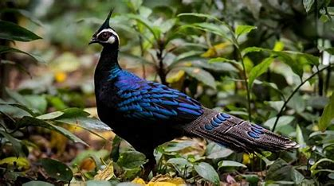
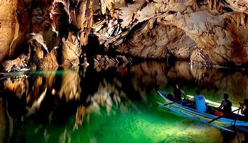

Biodiversity Exploration
- The Puerto Princesa Subterranean River National Park boasts a unique "mountain-to-sea" ecosystem, where lush forests seamlessly transition into coastal waters, creating a haven for a diverse range of flora and fauna.
- This ecological treasure is home to several endangered species, including the striking Palawan peacock-pheasant with its iridescent plumage, the impressive monitor lizards often seen basking near the riverbanks, and the elusive Philippine forest turtle, a rare species that highlights the park's critical role in conservation.
- This rich biodiversity underlines the park's importance as a sanctuary for both terrestrial and aquatic life.
Rich Biodiversity Hotspot

- Within the intricate cave system of the Puerto Princesa Underground River, researchers have documented a variety of unique species that sustain its delicate ecosystem.
- Bats roost in the cave's ceilings, playing a vital role in nutrient cycling through their guano, which supports microbial life. Swiftlets, known for their remarkable ability to navigate in darkness using echolocation, contribute by building nests that have cultural and ecological significance. Insects, including specialized cave-dwelling species, further balance the ecosystem by decomposing organic matter and serving as prey for other organisms.
- This interplay of life forms highlights the cave's ecological harmony and its importance in biodiversity conservation.
Unique Cave Ecosystem

- Celebrated for its outstanding universal value, the Puerto Princesa Subterranean River National Park plays a pivotal role in global biodiversity conservation.
- Its unique ecosystems, from lush tropical forests to its underground river and karst landscapes, harbor a wealth of flora and fauna, many of which are endemic or endangered.
- The site's ecological significance has garnered international acclaim, earning it a designation as a UNESCO World Heritage Site and a New7Wonders of Nature. This recognition underscores its vital importance in preserving Earth's natural heritage for future generations.
UNESCO World Heritage Site